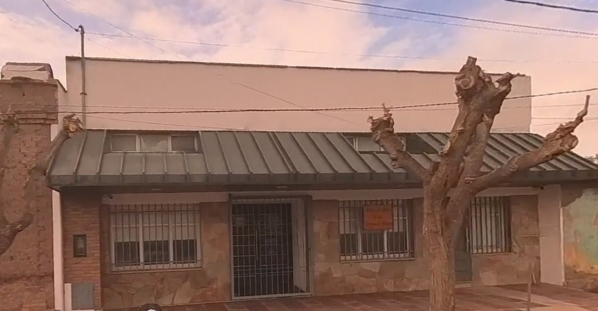

¿Necesitás indicaciones para llegar? Activá aquí...
Activar/Desactivar mi ubicación
 Para recibir Ayuda, tocá ☰
Para recibir Ayuda, tocá ☰

Si sos un publicador, este mapa en línea te permitirá:
Ubicar un territorio con la opción de hacerlo a partir de tu ubicación en tiempo real.
Es decir, si vos se lo autorizás, te trazará una ruta con las indicaciones necesarias para llegar...!!!. Te incluirá una distancia y demora estimadas y hasta te avisará con voz cuando estés cerca y cuando hayás llegado...!!!
Podrás consultar las salidas del mes en curso y si dirigiste alguna salida, podrás enviarle los detalles de lo que se abarcó al hermano encargado de los territorios.
Por otra parte, si sos el viajante, además podrás:
Localizar las casas y los puntos donde puedas tener tus arreglos para almuerzos, pastoreos y actividad.
En la barra lateral podrás encontrar secciones con las herramientas disponibles y un apartado de ayuda para orientarte a encontrarlas y saber su función.-
Estos registros ayudan a predicar a conciencia nuestro territorio
Informar de una casa donde han pedido que no los volvamos a visitar, ayuda a resguardar la seguridad de nuestros hermanos y también puede ser una manera indirecta de dar testimonio.-